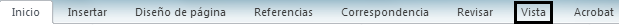

1 Descripción de la ventana principal
La plataforma que estaremos describiendo en esta unidad, es Microsoft Word una herramienta que sirve para redactar documentos, tales como, cartas, folletos, monografías, ensayos, y muchos más.
1.1 Generalidades
En la página principal al momento de abrir la aplicación, se muestra el documento en blanco, mostrando la tabla de herramientas que puedes utilizar en el programa:

Aquí podemos realizar algunos cambios al tipo de letra, aumentar o disminuir el tamaño de estas, colocar estilos, como negritas, cursiva, tachado, subrrayado, cambiar el color de las letras, esto en la parte de fuente. En la parte que dice párrafo podemos colocar viñetas, enumerar en forma de lista, poner sangrías, elegir el tamaño del interlineado, alinear el texto, mostrar caracteres especiales etc. En la parte de estilos podemos colocar diferentes estilos para el texto que estemos realizando, por ejemplo, sin espacio, Titulo 1, Subtitulo 1 entre muchos otros.
1.2 Agregar y quitar barras de herramientas y botones.
Para poder agregar u eliminar barras de herramienta y botones tenemos que irnos a la parte superior izquierda y cliquear el siguiente botón:  , donde te mostrara una ventana para personalizar la barra de acceso rápido de Word:
, donde te mostrara una ventana para personalizar la barra de acceso rápido de Word:

Si alguna de las funciones que tu deseas no te aparece, puedes cliquear en la parte que dice “Mas comandos” o si no quieres colocarlo en la cinta de acceso rápido, puedes darle clic en el apartado de “Mostrar debajo de la cinta de opciones”

1.3 Mostrar y ocultar regla
Para mostra y ocultar la regla tenemos que desplazarnos al apartado donde dice vista
cuando estemos ahí, veremos un apartado llamado mostrar, donde te aparecerá, además de Regla, líneas de la cuadricula y panel de navegación, y cliquearas en el recuadro al lado de donde dice regla:

2 Configuración de páginas y márgenes
Para poder configurar las paginas e insertar márgenes debemos de ir donde dice Diseño de pagina, que se encuentra en la cinta de opciones al lado de insertar:
ahí se observaran diferentes apartados, nos enfocaremos solo en configurar la pagina, en donde podremos colocar distintos tipod de márgenes prediseñados y diseñados por ti mismo, podremos elegir la orientación de la hoja, ya sea horizontal o vertical, el tamaño de la pagina, podremos crear columnas, podemos insertar saltos de pagina, podes colocar una numeración para todos los renglones, y también puedes colocar guiones que te ayudan a obtener un espaciado mas uniforme en el documento

3 Introducción y manipulación de un párrafo.
Los párrafos son el texto que conforma a un documento de Word, inicia con una letra mayúscula y termina con un punto y final, en este podemos colocar una letra capital al principio puedes alinearlo en donde tu quieras, ya sea a la izquierda ala derecha a, puedes poner cualquier tipo de letra en el texto, escoger su tamaño, escoger el espaciado el interlineado en cada renglón y escoger algunas animaciones para el texto.
3.1 Escritura de un párrafo
Para poder escribir un parrafo solo basta con colocar el cursor en donde quieras empezar a escribir, y teclear las letra que están el teclado para poder generar oraciones, recordando que primero se debe de empezar con una letra en mayúscula respetando la ortografía de cada palabra y terminando con un punto y final en el parrafo.
3.2 Ortografía y sinónimos
Para poder obtener una buena redacción es importante tener en cuenta la ortografía al momento de escribir para demostrar que lo que estás haciendo lo haces de manera correcta, además que todos debemos de conocer la manera correcta de escribir, de todas formas cuando escribes mal una palabra aparecerá subrayada por la parte de debajo de color rojo, así:  , cuando te hace falta colocar un acento, la palabra aparecerá subrayada de color azul, así: , y cuando aparece subrayada de color verde es por un error gramatical, por ejemplo:
, cuando te hace falta colocar un acento, la palabra aparecerá subrayada de color azul, así: , y cuando aparece subrayada de color verde es por un error gramatical, por ejemplo:  , y el uso de sinónimos es indispensable para no repetir demasiadas veces la palabra utilizada por ejemplo, utilizar la palabra abundante en ves de mucho.
, y el uso de sinónimos es indispensable para no repetir demasiadas veces la palabra utilizada por ejemplo, utilizar la palabra abundante en ves de mucho.
3.3 Fuente, estilo, tamaño, efectos, animación y espacio entre caracteres.
La fuente es el tipo de modificaciones a las letras que podemos escoger para el texto, por mencionar algunos tenemos a los dos tipos de calibri (uno para títulos y otro para el cuerpo del texto), arial, arialblack, todos los tipos de adobe, entre otros. Para seleccionar algunos de los tipos de fuente, tenemos que ir a la pestaña de inicio, en el apartado de “Fuente”, y cliquear donde aparece el nombre del estilo, justo en la pestaña de desplegar  , y escoger la que mas te guste:
, y escoger la que mas te guste:
También tenemos la opción de poder aumentar el tamaño de las letras que se encuentra a un lado de la opción de estilos:  , sirve para lo mismo que un icono que tiene una letra A: .
, sirve para lo mismo que un icono que tiene una letra A: .
Existe la opción de agregar estilos para la escritura que hiciste, por ejemplo, existe el estilo de letra para utilizarlo en los títulos, para poner todas las letras sin espacios, para colocar textos en forma de cita textual, de alguna referencia etc.
Se encuentra a lado del recuadro de párrafo:
Los efectos de animación en el texto son muy diferentes a los de PowerPoint, estos solo decoran las letras para que parezcan más llamativas en el texto ya sea ponerles colores, colocar sombras, hacerlas en tercera dimensión, se encuentra en el apartado de Fuente:
Para poder escoger el espaciado entre caracteres tienes que seleccionar primero el texto que desees modificar, abrir el apartado de fuente y cliquear el apartado de avanzado y elegir el espacio que deseas asignar para los caracteres:
3.4 Sangrías, alineaciones, espacio anterior y posterior, interlineado.
Para agregar sangría o cambiar la cantidad de sangría antes del texto, tienes que seleccionar o escribir un número en el cuadro de texto antes . Puede usar las opciones especiales para aplicar solo sangría a la primera línea o para agregar una sangría francesa, la sangria se mide en pulgadas por ejemplo 1.2 pulgadas, para cambiar la ubicación horizontal del texto, en el cuadro alineación , elija izquierda, Centro, derecha, justificadoo distribuido. Justificado agrega espacio entre palabras para que las líneas de texto toquen los márgenes izquierdo y derecho, excepto para la última línea del párrafo, que usa el espaciado normal de las palabras. Distribuido es similar a justificado, pero incluso la última línea toca los márgenes izquierdo y derecho, con el espacio agregado entre palabras y letras, según sea necesario, también podemos ajustar el espaciado, para cambiar el espaciado que está encima o debajo de un párrafo, escriba o haga clic en las flechas junto a anterior o posterior. Para cambiar el espaciado situado encima y dentro de un párrafo, use las opciones de interlineado: simple, 1,5 o Double. O bien, seleccione exactamente y, a continuación, agregue un valor de punto en el cuadro en. O bien, seleccione múltiple y agregue un valor al cuadro:
3.5 letra capital
La letra capital solo sirve para resaltar el comienzo de un párrafo es solo una letra mas grande, para colocarla tenemos que ir a la pestaña de insertar e ir al apartado de texto y ahí te aparecerá una pestaña para desplegar los estilos de letra capital:
4 Almacenar Informacion
El almacenar información es de vital importancia para guardar todo el proceso que gemos avanzado cuando hacemos algún trabajo, para esto tenemos dos formas de ahcerlo el guardar y el guardar como.
4.1 Guardar y guardar como
En este apartado podemos guardar los archivos que son creados y poder quedarte todo el avanze que hayas logrado en todo el tiempo que hayas creado, para lograr esto tendremos que ir a la pestaña de inicio
Despuesclickearas la parte donde dice guardar:
4.2 Seleccionar el destino
Para la otra manera de hacer el guardar como, tienes que clickear la prate de abajo que es referenciado con el mismo nobre, y a continuación deberas de teclear el nombre que elijas para tu archivo:
4.3 Indicar el tipo de archivo
Para esto ya cuando estemos e la parte de guardar como veremos una pestaña desplegable al lado de la leyenda “Tipo:” y elegirás el tipo que desees:
4.4 Crea una carpeta
Para poder cliquear una carpeta solo cliquearemos el botón izquierdo del raton y seleccionaremos la opción de crear y se te abrirá una opción y seleccionar la que indica carpeta:
4.5 Abrir una carpeta
Al igual que para crear una carpeta cliquearas la parte donde dice abrir ysolo lo cliquearas una vez:
5 Tabulaciones
Las tabulaciones son realizadas por la tecla de tabulación que se encuentra en la parte superior izquierda justo arriba de la tecla Bloq Mayus, esto no sirve para poder a linear el texto al lado que tu decidas, esto también va en función a la regla que aparece en la parte de arriba, seleccionando asi la parte para que quieres tabular.
5.1 Posición, alineación y relleno
Una tabulación derecha establece el extremo derecho de la línea de texto. A medida que escriba, el texto se rellena hacia la izquierda. Una tabulación Decimal Alinea los números en torno al punto decimal. (Cuando utiliza este tipo de punto de tabulación, debe alinear los números en torno a un carácter decimal.
Una forma rápida de establecer puntos de tabulación en el documento es hacer clic en la regla donde quiere que estén las tabulaciones, haga clic en los puntos de la regla donde desee colocar una tabulación ahora, cuando presione la tecla TAB, el texto se alineará con las tabulaciones que haya establecido.
Para poder rellenar las tabulaciones de una manera mas bonita podemos llenar las flechas feas que aparecen allí para que se vean mejor:
6 Numeración y viñetas.
La numeración y la colocación de las viñetas se encuentran al igual que todo en la parte de párrafo, la enumeración nos sirve para crear índices en la parte inicial de algún diocumento, hacer listas para organizar de mejor maenra la información, también para colocar títulos, subtitulos etc.
6.1 Cambiar formato y símbolo de la viñeta.
Haz clic en el desplegable Viñetas del panel lateral, ficha Propiedades > Párrafo y selecciona Más opciones desde la pestaña Opciones, selecciona de la lista Nivel aquel que deseas modificar, o selecciona 1-10 para modificar todos los niveles, y haz clic sobre el botón de navegación Writer 311 10.031.png de la propiedad Carácter, a continuación, desde el cuadro de diálogo Símbolos, selecciona la fuente que contiene el símbolo buscado en el desplegable Fuente. Selecciona en el tablero el carácter especial y haz clic sobre Aceptar.
7 Bordes y Sombreados
Los bordes y los sobreados son solo elementos decorativos que puedesutilizar para mejorar tu trabajo hecho en Word, para los bordes tenmos distintos tipos de estos tales como para las imágenes, para los márgenes que queramos colocar, etc:
8 Copiar, mover y pegar información
El poder saber como utilizar muy bien el poder copiar, que nos sirve para poder seleccionar una cuanta información y copiarta en el porta papeles, para esto tenemos que tomar el mouse y mantener presionado el click derecho y arrastrando por el texto lo que quieras seleccionar y después clickearas en el texto una vez con el botón izquierdo y seleccionaras la opción de copiar, o también puedesutillizar la combinación de teclas crtl+c.
Una vez copiada la información en el portapapeles tienes dos opciones, dar un clic derecho y poner el cursor encima de la palabra pegar que te aparece en la pantalla emergente, o presionar la combinación de teclas ctrl+v.
9 Copiar formatos.
El copiar el formato nos sirve de demasiado para poder aplicar el formato del documento (ya sea la letra, el tipo, el tamaño, el color) solo cliqueando en la parte de portapapeles aparece con el símbolo de una brocha.

10 Deshacer, rehacer y eliminar.
Para poder hacer esto tenemos que saber que el deshacer alguna acción realizada nos ayuda para no tener que estar gastando tiempo en borrar alguna opción de algo, el botón que nos ayuda a esto esta caracterizado por tener una flecha que apunta hacia la izquierda y se encuentra ubicado en la esquina superior izquierda de la ventana, también podemos utilizar el comando crtl+z
Para rehacer una acción tendremos que teclear el comando crtl+Y, esto solo tiene la función de volver a hacer una acción que desisiste o que no quieres que se borre, en la barra de accesos directos igual aparece con una flecha pero en este caso esta apuntando hacia la derecha
Los párrafos vacíos aparecen como líneas en blanco en el documento. Para quitarlos, solo tiene que seleccionarlos y eliminarlos. (Un párrafo en Word es cualquier texto que termina con un retorno manual). Para eliminar un salto de página, selecciónelo haciendo clic en él y, a continuación, pulse la tecla Suprimir.
11 Insertar símbolos
De forma predeterminada, el cuadro de diálogo símbolo muestra Emoji en primer lugar cuando se abre. Pero puede expandirlo para ver otros juegos de caracteres: Desplácese hasta la parte superior y haga clic en el botón de alternancia en la esquina derecha, para poder insertarlo tienes que ir al menú Insertar , haga clic en símbolo avanzado y, a continuación, haga clic en la pestaña símbolos y selecciona el que mas te guste.
12 Manipulación de tablas
Las tablas son un elemento demasiado importante para el organizar información además de que es demasiado fácil hacerlas y para que se vea demasiado mejor el documento, en este tema se hablara de todo lo relacionado con la creación de tablas.
12.1 Insertar una tabla.
Para poder insertar una tabla solo es necesario uqe vayamos al menú de insertar con el cursor cliquearas donde dice tabla y se desplegara una pestaña donde podras elegir de que tamaño quieres hacer tu tabla.
12.2 Insertar filas y columnas.
Las filas son los recuadros que están ubicadas de manera horizontal y las columnas son aquella que están alineadas de manera vertical, para poder insertarlas cuando ya tengamos creada la tabla tendremos que seleccionarla y cliquear con el botón derecho, y elegir la opción de insertar y ahí podrás elegir lo que tú quieras insertar ya sea una fila o una columna entre otras cosa más:
12.3 Eliminar filas y columnas.
Para poder eliminar una fila o columna tenemos que volver a cliquear con el clic derecho la tabla y escogeremos la parte que dice Eliminar y te desplegara una pagina con opciones de eliminado:
12.4 Eliminar tabla.
Coloque el cursor sobre la tabla hasta que el controlador de movimiento de tabla Controlador de movimiento de tabla aparece y, a continuación, haga clic en el controlador de movimiento de tabla y presione la tecla para borrar y listo.
12.5 Alineación en las celdas.
Paara poder alinear elas celdas dy el texto que esta sobre ellas tenemos que cliquear con el clic derecho de nuevo y te aparecerá en la pestaña de ajuste un apartado de que dice alineación de celdas y escoges la que tu quieras.
12.6 Combinar celdas.
Para hacerlo seleccionaras las celdas que desees combinar y después clic derecho, luego seleccionar con el cli izquierdo donde dice combinar celdas y ya.
12.7 Propiedades de la tabla.
Aquí podras realizar todos los tipos de especificaciones para la tabla desde agragar filas y columnas hasta poner sangrías dentro de las celdas, elegir la alineación de cada una de ellas, elegir el tamaño de toda la tabla, escoger el lugar donde estará ubicada, el ajuste del texto que le quieras poner. etc
12.8 Auto formatos.
Seleccione las celdas, incluidas las cabeceras de filas y columnas, a las que desee dar formato.
Elija Formato – AutoFormato, para seleccionar las propiedades que se incluirán en el formato automático, pulse en Más, y para terminar pulse en Aceptar.
12.9 Formulas básicas
Las tablas de Word no sólo se pueden usar para representar información en forma tabular. También se pueden usar las celdas de las tablas para realizar operaciones matemáticas.
Si se ha de realizar algún cambio en aluna celda de una tabla, y se desea que Word actualice los resultados de una fórmula, se selecciona la celda en la que se encuentra dicha fórmula y se pulsa la tecla F9. Las fórmulas se pueden insertar con operadores (+,/,*,-) o bien con funciones.

13 Barras de herramientas de dibujo.
Consiste en incluir en el interior de un documento el contenido de un archivo gráfico.
En el caso de las imágenes, Word proporciona un submenú dentro del menú Insertar, con las distintas opciones disponibles para este tipo de archivos.
13.1 Colores y líneas, diseño, tamaño.
El color, el estilo y el grosor de una línea se pueden personalizar. Si usa Excel, Outlook, Word o PowerPoint, puede aplicar un estilo rápido predefinido para cambiar rápidamente el aspecto de la línea.
Seleccione la línea que desee cambiar.
Si desea cambiar varias líneas, seleccione la primera línea y, a continuación, mantenga presionada la tecla CTRL mientras selecciona las demás líneas. Para obtener más información sobre cómo seleccionar líneas, consulte seleccionar una forma u otro objeto.
En herramientas de dibujo, en la pestaña formato , en el grupo estilos de forma , haga clic en la flecha situada junto a contorno de formay, a continuación, haga clic en el color que desee.
Si no ve las pestañas herramientas de dibujo o formato , haga doble clic en la línea para asegurarse de que la seleccionó.
Para cambiar a un color que no esté en los colores para temas, haga clic en Más colores de contorno y, después, haga clic en el color que quiera en la pestaña Estándar o mezcle sus propios colores en la pestaña Personalizado. Los colores personalizados y los colores de la pestaña Estándar no se actualizarán si cambia más adelante el tema del documento.
13.1.1 Tamaño, mover, copiar y pegar.
Para poder colocar en una imagen prediseñada utilizando los mismos comandos de siempre pero esta vez escoger lo que quieras ya sea moverlo, copiarlo, y pegarlos:
13.2 Auto formas
En el menú INSERTAR, seleccionamos la opción IMAGEN y finalmente seleccionamos AUTOFORMAS.
Se nos desplegará una barra de herramientas de autoformas, donde están la distintas autoforma que Word nos provee agrupada en distintas categorías para facilitarnos su búsqueda e identificación, según el gráfico que deseemos hacer.
13.3 Letra artística
Una vez abierto dar clic en la pestaña “Insertar”. Buscar la sección de “Texto”. Clic en el icono WordArt. En el menú que se desprende selecciona la letra de SmartArt deseada y clic sobre ella. Borras el texto, luego poses el texto que desees y das un clic fuera de él.
Pulsas el cursor y lo arrastras para dar la forma deseada suéltalo cuando tengasel tamaño deseado.
13.4 Cuadro de texto
El cuadro de texto nos sirve para poder insertar en una imagen un texto ya sea largo o corto, para colocarlo tenemos que ir a la parte de insertar y en texto parece una parte que dice insertar cuadro de texto y te va a dejar colocarlo en cualquier lugar de la pantalla y tendras también algunos diseños prediseñados por Word:
13.5 Relleno y efectos de relleno
Agregar un relleno degradado a una forma. Puede aplicar un relleno degradado a formas, cuadros de texto y elementos gráficos SmartArt Word. Un relleno de degradado es un relleno para formas que cambia gradualmente de un color a otro a través de la superficie de la forma.
13.6 Líneas: estilo y color
Los estilos rápidos de línea incluyen colores del tema del documento, sombras, estilos de línea, degradados y perspectivas tridimensionales. Pruebe distintos estilos rápidos hasta que encuentre uno que le guste. Seleccione la línea que desea cambiar. Si desea cambiar varias líneas, seleccione la primera línea y, a continuación, mantenga presionado COMANDO mientras selecciona las demás líneas. Haga clic en la pestaña formato de forma y, a continuación, haga clic en el estilo rápido que desee para la línea.
14 Insertar
En el menú de insertar que tenemos a un lado de la pestaña de inicio aquí podras insertar en la pagina una portada, una nueva pagina en blanco y algunos saltos de pagina, además de insertar tablas, imágenes gráficos, vínculos, colocar encabezado pies de pagina y muchas otras cosas:
14.1 Salto de página
Los saltos de pagina nos ayudan a pasar de una página entra si la necesidad de apretar demasiadas veces el botón de Entrar, este se encuentra en la página de insertar en el primer apartado, solo basta con hacer un clic y automáticamente se salta a la siguiente pagina justo donde te encuentras en ese momento:
14.2 Nota de pie
Para poder poner una nota de pie es necesario de igual manera ir al menú de insertar y ahí en encabezado y pie de pagina lo colocas y este se pondrá en todas las hojas del archivo:
14.3 Marcador
Los marcadores son un grupo de vínculos que apuntan a destinos diferentes, tales como distintas vistas de página, secciones del documento actual u otros documentos. Los estilos o encabezados de Word seleccionados se pueden convertir en marcadores de PDF con la jerarquía de niveles que usted especifique, sin alterar la estructura lógica del documento de Word original.
Los marcadores ayudan al lector a examinar documentos PDF con facilidad, en especial cuando se trata de un conjunto de documentos.
14.3.1 Insertar y manipular los marcadores y números de página.
Para poder insertar y manipular marcadores y nuemros de pagina tenemos que ir a vínculos y seleccionaremos la parte que dice marcadores y allí podes hacer todos los cambios y modificaciones ala pagina que quieras.
14.4 Hipervínculos
Los hipervínculos son pequeños enlaces que acortan el estar buscando alguna archivo de la computadora, es como abrir el archivo pero de manera más sencilla, para esto tenemos que ir a la pestaña de insertar y abrir de nueva cuneta en vinculas cliquear el apartado de hipervínculos y elegir el archivo que quieres enlazar al documento que estas creando:
14.5 Insertar columnas.
El insertar columnas es importante para organizar algún tipo de einformacion en especifico, para poder hacerlo tenemos que ir ahora a la pestaña de diño de paginas y encontraremos un apartado que dice configurar paginas y aparecerá una iopcion que dice columnas y la cliquearemos para poder seleccionar que tipo de columna quieres:
15 Imprimir
Para imprimir el documento es necesario que te dirijas a la esquina superior izquierda justo en el borde darás un clic y te desplegara una pestaña para que veas cómo es que va a quedar impreso el documento en la hoja de papel, las opciones de impresión, a que impresora lo quieres enviar y otras características para la impresión:

15.1 Vista preliminar
La vista preliminar te muestra como es que qeudara el documento y allí también podras hacer unas pocas modificaciones al documento:
15.2 Encabezado y pies de páginas
El encabezado y los pies de pagina son demasiado importante por ejemplo, para poder crear como un tipo de simbología de lo que significan algunas cosas del documento, puesdes ponerlo con los pies de pagina y por ejeplo en el encabezado puedes poner la fecha para que aparezca en todo el documento, estas dos opciones se encuentran en la pestaña de insertar y cuando los cliqueas puedes hacer las modificaciones que quieras:
15.3 Especificar impresora
Para el especificar en que impreso quieres que salga la impresión igual tienes que abrir el menú de Word e ir de nueva cuenta a impresión y de ahí tienes que darle clic a imprimir y te despeglara una pestaña donde tienes que elegir todas las características de la impresión:
16 Combinación de correspondencia
El combinar correspondencia es demasiado importante para que puedas ahorrar tiempo al momento de querer enviar algún correo, para poder hacerlo tienes que tener ya lista una lista de contactos a los que quieras enviarles una copia del correo }, por ejemplo una base de datos previamente creada en Excel e irte a la parte correspondencia donde te diran que crees un correo y que selecciones a que personas quieren enviárseles el correo, si tienes problemas para hacerlo wprd tiene un tutorial de cómo hacerlo:
17 Editor de ecuaciones
Si te gustan las matemáticas Word también tiene una pestaña indicada para poder insertar ecuaciones, esta se encuentra en el menú de insertar y en el apartado de símbolos y puedes seleccionar la operación que quieras:
1 Conceptos
La mayoría de las cosas que veremos aquí podemos describir están en el programa de PowerPoint, es una aplicación de la paquetería de office creada para hacer presentaciones electrónicas que nos pueden ayudar como guía de alguna exposición de algún tema además de servir también para informar a alguien de algún tema de interés.
1.1 Presentación electrónica.
Las presentaciones electrónicas son productos informáticos que se basan en imágenes elaboradas en las computadoras y que se muestran mediante un proyector. Se realizan en programas que permiten crear de una manera rápida llamativa y profesion al laminas o diapositivas digitales donde se pueden insertar textos, imágenes, gráficos, tablas y elementos multimedia como video, audio y animación. Tienen como objetivo realizar exposiciones visuales ante un publico numeroso. Como parte de una presentación, se incluyen también otros recursos que funcionan como apoyo de la exposición.
1.2 Diapositiva.
Las diapositivas son "las hojas" que tiene tu presentación. Contienen marcadores de posición, que son cuadros formados por bordes punteados. Éstos pueden contener muchos elementos diferentes incluyendo texto, imágenes, gráficos y más.
1.3 Esquema.
La vista esquema de PowerPoint muestra la presentación como un resumen formado por los títulos y el texto principal de cada diapositiva. Cada título aparece en el lado izquierdo del panel que contiene la pestaña esquema, junto con un icono de diapositiva y un número de diapositiva.
1.4 Notas
En PowerPoint puedes añadir notas a la diapositiva. Las llamadas notas del orador, pueden ayudarte a preparar tu presentación. Puedes entrar y verlas, utilizando el panel de notas o la vista Página de notas. Estas notas te ayudan a más que nada agregar algún comentario para que no se te olvide hacer algún cambio o modificación a la diapositiva.
1.5 Objeto.
PowerPoint: Manejar objetos. Los objetos no son más que elementos que podemos incorporar en una diapositiva, por ejemplo un gráfico, una imagen, textos, vídeos, sonidos, etc. Estos objetos tienen sus propias características y propiedades que más adelante analizaremos con más detalle.
2 Tipos de vista
Las dos vistas principales que se utilizan en PowerPoint son la vista Normal y la vista Clasificador de diapositivas. Para pasar de una vista a otra de una forma sencilla, simplemente haga clic en los botones que se encuentran en la parte inferior izquierda de la ventana de PowerPoint.

2.2 Vista Clasificador de diapositivas
La vista Clasificador de diapositivas es una vista de las diapositivas en forma de miniaturas. Para ver la presentación en el clasificador, haz clic en la ficha Vista y luego en Clasificador de diapositivas del grupo de comandos Vistas de presentación.
Seleccionamos vista clasificadora de diapositivas y así ver todas a la vez, pudiendo tener una idea global del cambio realizado. Podemos acceder desde la parte inferior derecha del programa:
Cuando se termine de crear y modificar la presentación, el Clasificador de diapositivas ofrece una visión general de la misma y permite reordenar, agregar o eliminar fácilmente las diapositivas y mostrar una vista previa de los efectos de transición y animación.
2.3 Vista Presentación con diapositivas
Este tipo de vista es la vista normal con la que inician todas las presentaciones de PowerPoint , solo que en este caso se va a reproducir en toda la pantalla la presentación en diapositivas con todos los cambios ya realizados en la presentación con todo y los efectos de transición y eso.
3 Creación de presentaciones y diapositivas.
Ahra que ya conoces los conceptos básicos de las presentaciones electrónicas puedes crear presentaciones mucho mas detalladas y crear transiciones entre diapositivas todo para mejorar todas las características de la presentación.

3.1 Asistente para autocontenido
El Asistente para autocontenido es una buena opción para crear una presentación cuando no se tiene mucha experiencia en Power Point, o también es muy útil cuando se trata de crear una presentación en forma rápida.
3.2 Fondo
Los Estilos de fondo se pueden añadir a las diapositivas después de aplicar un tema. Los estilos están llenos de variaciones basadas en los colores del tema. Cuando cambies de tema, el estilo de fondos se actualizará basándose en los nuevos colores del tema.
3.3 Patrón de diapositivas
Un patrón de diapositivas es una diapositiva que ocupa el lugar superior en una jerarquía de diapositivas y almacena información sobre el tema y los diseños de diapositiva de una presentación, incluidos el fondo, el color, las fuentes, los efectos, los tamaños de los marcadores de posición y las ubicaciones. Este tiene el fin de que caad que crees alguna diapositiva se quedara con el diseño que tu ya elegiaste, con el formato ya establecido.
3.4 Diseño de diapositivas
Los diseños de diapositiva contienen cuadros de formato, posicionamiento y marcador de posición para todo el contenido que aparece en una diapositiva. ... Puede cambiar los diseños de diapositiva estándar que están integrados en PowerPoint en la vista patrón de diapositivas. Para poder cambiar el diseño de la diapositiva: En el grupo Vistas de presentación de la pestaña Vista, haga clic en Patrón de diapositivas o en el panel que contiene los patrones de diapositivas y diseños, haga clic en el diseño que desea editar.
3.4.1 Componentes
Los componentes clásicos de las diapositivas de powerpoint son los cuadros de texto en donde podemos escribir cosas en la pagina en blanco de la diapositiva, un recuadro para poner el titulo del texto, y otro para poder poner unformacion o algún otro componente como figuras, graficas, encuestas etc.
3.4.2 Seleccionar el diseño de una diapositiva.
Para poder seleccionar el diseño de una diapositiva tenemos que ir a la parte de la pestaña que tiene el mismo nombre y de ahí seleccionar el diseño que mas te guste, y puedes también aplicarlo en una sola diapositiva o en todas las diapositivas creadas y que vas a crear:
3.4.3 Cambiar el diseño de una diapositiva.
Para cambiar el diseño de la diapositiva solo basta con cliquear en la parte de diseño y seleccionar al que quieras cambiar, o bien, también puedes crear un nuevo diseño de diapositiva en la parte de crear en blanco y poniendo los cuadros de texto donde mas desees.
3.4.4 Presentación en blanco.
La presentación en blando nos ayuda para poder agregar en ella el diseño que nosotros queramos poder además de ser más utilizada para el poner imágenes en ellas, de referencia también se pueden utilizar para hacer un espacio para poner algún hipervínculo, o vinculo.
4 Guardar
En PowerPoint 2013 y versiones posteriores, puede guardar la presentación del escritorio en su unidad local (por ejemplo, su equipo portátil), una ubicación de red, un CD, un DVD o una unidad flash. También puede guardar como otro formato de archivo. Si desea guardar la presentación en la ubicación web, vea Guardar y compartir una presentación en OneDrive.
En la pestaña Archivo, seleccione Guardar.
Archivo > Guardar o Guardar como
Siga uno de los siguientes procedimientos:
Para guardar en la unidad local, como en un portátil, en una unidad flash o en una unidad de CD o DVD, seleccione Equipo.
Para guardar en una biblioteca de SharePoint, seleccione SharePoint.Para guardar la presentación en una ubicación web, vea Guardar y compartir una presentación en OneDrive.
En Guardar como > Carpetas recientes, seleccione Examinar, seleccione una ruta de acceso y una carpeta de archivos y, después, escriba un nombre para el archivo.
Seleccione Guardar.
4.1 Presentación
Una presentación en PowerPoint es una presentación creada utilizando el software Microsoft PowerPoint. La presentación es una colección de diapositivas individuales que contienen información sobre un tema. Son comúnmente utilizadas en reuniones y entrenamientos de negocios y con propósitos educacionales
4.2 Presentación con diapositivas
Una presentación en PowerPoint es una presentación creada utilizando el software Microsoft PowerPoint. La presentación es una colección de diapositivas individuales que contienen información sobre un tema. Son comúnmente utilizadas en reuniones y entrenamientos de negocios y con propósitos educacionales.
5 Trabajar y dar formato a objetos
En PowerPoint también tenemos diferentes tipos de objetos que podemos colocar, ya sean desde colocar una simple tabla, hasta colocar animaciones y videos dentro de la misma aplicación de PowerPoint, todo esto en la parte de inserta.
5.1 Tabla
Crear una tabla y darle formato en PowerPoint
Seleccione la diapositiva a la que desea agregar una tabla. En el cuadro de diálogo Insertar tabla, siga uno de estos pasos: Haga clic y mueva el puntero para seleccionar el número de filas y columnas que desea y luego suelte el botón del mouse.
5.2 Grafico
Un grafico es lo mismo que una grafica como las de pastel o de barras. Para crear un gráfico sencillo desde cero en PowerPoint, haga clic en Insertar > Gráfico y elija el gráfico que quiera.
En PowerPoint 2007, haga clic en el marcador de posición en el que quiere incluir el gráfico.
En la pestaña Insertar, en el grupo Ilustraciones, haga clic en Gráfico.
En el cuadro de diálogo Insertar gráfico, haga clic en un gráfico y, a continuación, haga clic en Aceptar.
5.3 Organigrama
Use un elemento gráfico SmartArt para crear un organigrama para mostrar las relaciones jerárquicas existentes en su organización. Organigrama simple. En la pestaña Insertar, haga clic en SmartArt. Insertar SmartArt Elija un diseño de organigrama en la galería de elementos gráficos SmartArt. Elegir un organigrama Haga doble clic en el organigrama de la diapositiva para que los cuadros se conviertan en una lista con viñetas. Introduzca los nombres y títulos en la lista del organigrama y presione Entrar. Sugerencia: Para agregar más personas al organigrama, presione Entrar y se agregará otra línea a la lista. Agregar nombres a los cuadros del organigrama
Aún en la lista con viñetas, haga clic en un nombre o título que quiera ascender o degradar en el organigrama. En la pestaña Diseño de herramientas SmartArt, haga clic en Ascender o Degradar.
Ascender o degradar. Además, en la ficha Diseño de herramientas de SmartArt se puede cambiar el color, el estilo y el diseño del organigrama.
5.4 Cuadro de texto
El cuadro de texto nos sirve para poder agregar un tecto en una diapositiva, para poder crear uno tenemos que irnos a la parte de insertar y seleccionar la parte que dice cuadro de texto y asi seleccionar en dode quieras crear tu cuadro de texto:
5.5 Auto formas
Autoformas es una función en PowerPoint que permite al usuario crear sus propias imágenes para una presentación. Abre el PowerPoint. En la parte superior de la pantalla haz clic en "Insertar", luego en "Imagen" y por último en "Autoforma". Una barra de tareas para las autoformas se abrirá en la pantalla.
5.6 Textos artísticos
Los textos artísticos no son mas que los efectos que les puedes poner a las letras en powerpoint igual esta con su nombre en ingles wordart y solo sirve para eso.
5.7 Imágenes
También puedes agregar las imágenes que quieras poner en la diapositiva ubicándote en el menú de insertar y cliqueas donde dice imagen, ya en ella puedes checar sus propiedades y mejorarla, ya sea ubicándola, poniéndole un contorno de algún color, cambiar su tamaño de este.
5.8 Selección y agrupación de objetos.
Presione y mantenga presionada la tecla CTRL mientras hace clic en las formas, imágenes u otros objetos para agruparlos. Para habilitar el botón agrupar, tendrá que seleccionar más de una forma, imagen u objeto .Para agrupar imágenes, en la pestaña Formato de herramientas de imagen, haga clic en Agrupar > Agrupar.
5.9 Girar Objetos.
Para girar objetos es demasiado sencillo solo cliquearemos el objeto que quieres girar y mantendremos el clic en el circulito verde que te aparece para poder girar tu objeto.
6 Insertar sonidos y películas
Otro elemento muy útil a la hora de diseñar presentaciones son elementos multimedia como sonido y películas. En PowerPoint podemos insertar en nuestras presentaciones sonidos e incluso películas. Para insertar un sonido en una presentación despliega el menú Insertar y elige Películas y sonidos. Después aparecerá una lista en la que podrás elegir un sonido de la galería de sonidos que incorpora PowerPoint. Podrás también insertar un sonido que ya tengas almacenado en tu ordenador, o grabar tú mismo el sonido e incluso insertar como sonido una pista de un Cd de audio.
6.1 Galería multimedia
Presentaciones multimedia y PowerPoint. Es un programa de office que permite crear presentaciones multimedia con todas las aplicaciones necesarias como: sonidos, imágenes, textos, animaciones. Nos brinda la aplicación para crear exposiciones dinámicas y presentaciones, todo esto esta prediseñado por la propia empresa.
6.2 Desde un archivo
Aquí puedes extraer desde tu computadora un archivo de video, previamente descargado o escaneado desde un disco de CD, igual con el sonido, puedes agragarlo cuando previamente descargaste alguna canción o algo.

6.3 Desde un CD de audio
Para poder extraer audio de un CD, tienes que copiar la información de este CD en alguna carpeta de una computadora y después convertir esos archivos a un formato de audio para después ya utiizarlos, ojo que esto es ilegal.
7 Manipulación de diapositivas
Para la manipulación de las diapositivas tenemos desde lo mas básico como cambiar de posición las diapositivas, acomodarlas a tu gusto, moverlas de lugar, además de poder agragar animaciones, entre muchos otros efectos mas.
7.1 Animación de objetos y texto
Seleccione el objeto o el texto que quiera animar.
Seleccione Animaciones y elija una animación.
Seleccione Opciones de efectos y elija un efecto.
Hay diferentes formas de iniciar las animaciones en la presentación:
Al hacer clic: inicie una animación al hacer clic en una diapositiva.
Iniciar con anterior: reproduzca una animación al mismo tiempo que la animación anterior en la secuencia.
Iniciar después de anterior: inicie una animación inmediatamente después de que termine la anterior.
Duración: aumente o acorte un efecto.
Retraso: agregue tiempo antes de que se ejecute un efecto.
7.2 Transición de la diapositiva
La transición de diapositiva nos permite determinar cómo va a producirse el paso de una diapositiva a la siguiente para producir efectos visuales más estéticos.
Para aplicar la transición a una diapositiva despliega el menú Presentación y selecciona la opción Transición de diapositiva.

7.3 Ensayo de intervalos
Ensayar intervalos te permite calcular el tiempo que necesitas para ver cada diapositiva sin prisas.
Para calcular el tiempo que necesitas tienes que desplegar el menú Presentación y elegir la opción Ensayar Intervalos, después verás que la presentación empieza a reproducirse pero con una diferencia, en la parte superior izquierda aparece una especie de contador que cronometra el tiempo que tardas en pasar de una diapositiva a otra pulsando algún botón del ratón.
7.4 Hipervínculos
En la vista Normal, seleccione el texto, la forma o la imagen que quiera usar como hipervínculo. Seleccione Insertar > Hipervínculo y elija una opción: Lugar de este documento: crea un vínculo a una diapositiva específica de la presentación. Crear documento: crea un vínculo desde la presentación a otra presentación

8 Configurar e imprimir una diapositiva
Para imprimir una presentación es demasiado secillo, podemos solo imprimir una pagina de la presentación o toda la presentación completa, podiendola colocar en una sola hoja varias diapositivas.

1 Conociendo a Dreamweaver
Dreamweaver es la herramienta de diseño de páginas web más avanzada, tal como se ha afirmado en muchos medios. Aunque sea un experto programador de HTML el usuario que lo maneje, siempre se encontrarán en este programa razones para utilizarlo, sobre todo en lo que a productividad se refiere.
Cumple perfectamente el objetivo de diseñar páginas con aspecto profesional, y soporta gran cantidad de tecnologías, además muy fáciles de usa.
1.1 Espacio de trabajo
Dreamweaver es la aplicación de escritorio mas fácil de utilizar para crear paginas web, maneja una interfaz demasiada sencilla de utilizar, proporcionándote además, algunos tutoriales de cómo empezar a crear tu extensión en HTML.

1.2 Inspector de propiedades
El inspector de Propiedades muestra las opciones propias del objeto o texto seleccionado, permitiéndonos editarlas, por lo que se convierte en uno de los elementos más utilizados en Dreamweaver. Por ejemplo, cuando el elemento seleccionado sea una imagen, mostrará su ubicación, dimensiones, peso, clase, etc...
Este panel puede mostrar dos tipos de propiedades, HTML y CSS, que podemos aplicar a los diferentes elementos de la página Web que estemos diseñando.

1.3 Grupo de paneles
Los grupos de paneles son conjuntos de paneles relacionados apilados bajo un encabezado en común. Para ampliar el grupo de paneles, haga clic en la pestaña de mostrar mas que esta a un lado del nombre del grupo. Para desacoplar un grupo de paneles arrástrelos hasta los puntos situados en el borde izquierdo de la barra de titulo.

1.4 Herramientas de visualización
Para la visualización que tenemos en dreamwever tenemos cuatro opciones, el apartado de nombre código que te muestra todo en código HTML para que puedas agregar algunas opciones de manera manual, dividir que te muestra la opción de código y la opción de diseño al mismo tiempo dividiendo la pantalla en dos partes.

1.5 Vista de diseño
En esta podemos observar como es que se ve la parte del diseño de la pagina en su codgio original de HTML además de mostrarte como es que se ve también lo que se mostrara ya creada la pagina web.

1.6 Propiedades de la pagina
Los títulos de página, las imágenes, los colores de fondo, los colores del texto y de los los vínculos son propiedades básicas de todos los documentos HTML. El título de página identifica y da nombre al documento. Una imagen o un color de fondo define la apariencia global del documento. Los colores del texto y los vínculos ayudan a los usuarios a distinguir entre el texto normal y el hipertexto, así como a reconocer qué vínculos han visitado y cuáles no.

1.7 Establecimiento de guías de diseño
El establecimiento de guias de diseño nos sirve para poder hacer una nueva pagina, con diseños prediseñados o que tu puedes hacer de manera muy sencilla y para toda la familia.
1.8 Establecimiento de reglas
Las reglas horizontales (líneas) son útiles para organizar la información. Puede separar visualmente el texto y los objetos de una página con una o más reglas.
Creación de una regla horizontal
En la ventana de documento, sitúe el punto de inserción en el lugar donde desea insertar una regla horizontal.
Seleccione Insertar > HTML > Regla horizontal.
También puede insertar una regla horizontal desde la sección HTML del panel Insertar.

2 Configuración de un sitio
Para poder configurar tu propio sitio web es necesario ya tenerlo creado asi será mucho mas sencillo poderlo configurar, ya sea el navegador a utilizar el tipo de archivo que se guardara y mas.
2.1 Creación de un sitio de prueba
Seleccione Sitio > Administrar sitios.
Haga clic en Nuevo para configurar un nuevo sitio, o bien seleccione un sitio de Dreamweaver ya existente y haga clic en el icono Editar.
En el cuadro de diálogo Configuración del sitio, seleccione la categoría Servidores y proceda de una de las siguientes formas:
Haga clic en el botón Añadir nuevo servidor para añadir un nuevo servidor.
Seleccione un servidor existente y haga clic en el botón Editar servidor existente.
Especifique las opciones básicas de la misma manera que lo haría para una conexión de servidor remoto y, a continuación, haga clic en el botón Avanzadas. Al configurar las opciones básicas, asegúrese de especificar una dirección URL de la web en la pantalla Básicas.
Para obtener información sobre cómo configurar una conexión de servidor remoto, consulte Conectarse a un servidor de publicación.
Para obtener más información sobre la dirección URL para el servidor de prueba, consulte Información sobre la dirección URL para el servidor de prueba.
En Servidor de prueba, seleccione el modelo de servidor que desee usar para su aplicación web.
Haga clic en Guardar para cerrar la pantalla Avanzadas. Seguidamente, en la categoría Servidores, especifique el servidor que acaba de añadir o editar como servidor de prueba.
2.2 Mapa visual del sitio
Cómo hacer el mapa de un sitio web con Dreamweaver. Puedes crear un mapa de un sitio y verlo, imprimirlo o añadirlo a una página web con Dreamweaver 3.0. Usa este mapa para verificar la estructura de tu sitio o asegurarte de que corresponda con tus intenciones, o para darle a tus usuarios una forma instantánea de navegar hacia cualquier página del sitio.
Inicia el programa Dreamweaver y abre el sitio que deseas.
En la caja de Site (sitio), elige Site Map (mapa del sitio).
Haz clic en el menú de archivo y selecciona Save Site Map (guardar mapa del sitio). Se te solicitará que guardes el mapa; hazlo en la misma carpeta que el resto de las imágenes de Dreamweaver para el sitio.
2.3 Vista previa del navegador
La vista previa del navegador te da una idea de cómo se vera tus sitio web en tu navegador predefinido, ya sea google, fire fox o internet explorer, con todas las modificaciones que hiciste en dreamweaver.

2.4 Añadir navegador
Para añadir a un navegador para abrir tu pagina de internet tienes que editar la lista de navegadores que tienes con tu computadora y asi agregar cualquier otro navegador que tengas instalado en tu computadora.

2.5 Panel de archivos
Desde el panel Archivos seremos capaces de controlar nuestro sitio local y remoto de forma fácil y rápida.
En este apartado veremos qué pasos debemos seguir para completar unas cuantas acciones que nos serán bastante útiles.
A primera vista el panel Archivos muestra este aspecto:

2.6 Creacion de archivos HTML
Dreamweaver ofrece un entorno flexible para trabajar con una gran variedad de documentos web. Además de documentos HTML, puede crear y abrir una gran variedad de documentos basados en texto, incluyendo JavaScript, PHP y hojas de estilos en cascada (CSS).
Dreamweaver proporciona varias opciones para crear un documento nuevo. Puede crear cualquiera de los tipos de documento siguientes:
Un nuevo documento o plantilla en blanco
Un documento basado en uno de los diseños de página predefinidos que vienen con Dreamweaver, incluidos más de 30 diseños de página basados en CSS
Un documento basado en una de las plantillas existentes.
También puede definir las preferencias del documento.

2.7 Tipos de archivos
Existen demasiados tipos de archivos que puedes crear en el dreaweaver desde lo mas básico como el html, la creación de gifs e imágenes en esta aplicaion, como archivos de java entre muchos otros.
3 Estructuración de paginas
La principal regla a cumplir en este lenguaje es conocer y crear la estructura básica del programa, consistiendo de la apertura de la etiqueta html, para ello, se encierra entre los símbolos de mayor que y menor que, <html>, conocida como la etiqueta de apertura, en otra línea del programa se escribe la etiqueta de apertura head, <head>, seguida de la etiqueta title, <title>, se escribe el título de la página web que se elabora, posteriormente se cierra la etiqueta title, agregando una diagonal al inicio de la etiqueta, </title>, a continuación se cierra la etiqueta head, </head>, el contenido de la página web que se observará en internet, se coloca dentro una etiqueta llamada body, <body>, comúnmente lo denominamos el cuerpo del programa o contenido del archivo, cuando terminamos de escribir su contenido de la página, cerramos la etiqueta body, </body>, y por último terminamos el programa cerrando la etiqueta html, </html>, la estructura básica se muestra a continuación.
4 Trabajando con vínculos
Una vez que haya creado un sitio con Dreamweaver para almacenar los documentos de su sitio web y haya creado páginas HTML, deseará crear conexiones entre sus documentos y otros documentos.
Dreamweaver ofrece varios métodos para crear vínculos con documentos, imágenes, archivos multimedia o software descargable. Puede establecer vínculos con cualquier texto o imagen de cualquier lugar del documento, incluidos el texto y las imágenes situados en un encabezado, lista, tabla, elemento con posición absoluta (elemento PA) o marco.
4.1 Vínculos entre paginas
A la hora de crear vínculos resulta fundamental conocer la ruta de archivo entre el documento desde el que establece el vínculo y el documento o activo con el que lo establece.
Cada página Web tiene una dirección exclusiva, denominada URL (Localizador Uniforme de Recursos, Uniform Resource Locator). Sin embargo, cuando se crea un vínculo local (un vínculo de un documento con otro documento del mismo sitio), no suele ser necesario especificar el URL completo del documento de destino. En este caso se especifica una ruta relativa desde el documento actual o desde la carpeta raíz del sitio.
4.2 Vínculos de correo electrónicos
Es posible especificar vínculos a direcciones de correo electrónico. Esto resulta útil cuando se desea que los visitantes de la web puedan contactar con nosotros.
Cuando el usuario hace clic en un vínculo de correo electrónico se abre una nueva ventana de mensaje en blanco (utilizando el programa de correo asociado al navegador del usuario). En la ventana de mensaje de correo electrónico, el cuadro Para se actualiza automáticamente con la dirección especificada en el vínculo del mensaje de correo electrónico.
Creación de un vínculo de correo electrónico utilizando el comando Insertar vínculo de correo electrónico. En la vista Diseño de la ventana de documento, coloque el punto de inserción donde desea que aparezca el vínculo de correo electrónico o seleccione el texto o la imagen que desea que aparezca como vínculo de correo electrónico. Siga uno de estos procedimientos para insertar el vínculo: Seleccione Insertar > Vínculo de correo electrónico.
4.3 Añadir vínculos en imágenes y texto
Puede utilizar el inspector de propiedades para establecer un vínculo con una determinada sección de un documento creando en primer lugar anclajes con nombre. Los anclajes con nombre permiten establecer marcadores en un documento, que a menudo se colocan en un tema específico o en la parte superior del documento. Posteriormente podrá crear vínculos con esos anclajes con nombre que llevarán rápidamente al visitante a la posición especificada.
5Formularios
Los formularios se utilizan para recoger datos de los usuarios, nos pueden servir para realizar un pedido en una tienda virtual, crear una encuesta, conocer las opiniones de los usuarios, recibir preguntas, hacer suscripciones a un boletín o revista que editemos, etc.

5.1 ¿Para que sirven los formularios?
el formulario básico, (insertar campos y botones en el formulario y validarlos) , pero no la parte de tratamiento de los datos, ya que para ello se necesitan nociones de programación, ya sea en SQL, en JavaScript o en otro lenguaje de programación, y esto no entra en los objetivos de esta lección.
Un formulario está formado, entre otras cosas, por etiquetas, campos de texto, menús desplegables, y botones.
Elementos de formulario
Los elementos de formulario pueden insertarse en una página a través del menú Insertar, opción Objetos de formulario. A través de esta opción se puede acceder a la lista de todos los objetos de formulario que pueden ser insertados en la página. Vamos a ver uno por uno algunos de los distintos elementos que pueden formar parte de un formulario, así como algunas de sus propiedades.